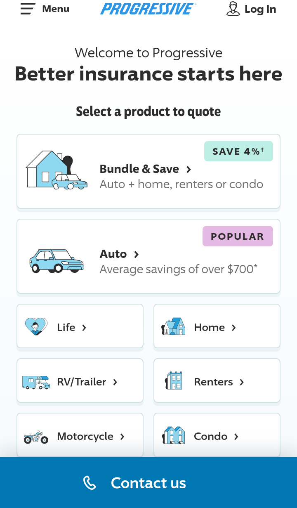
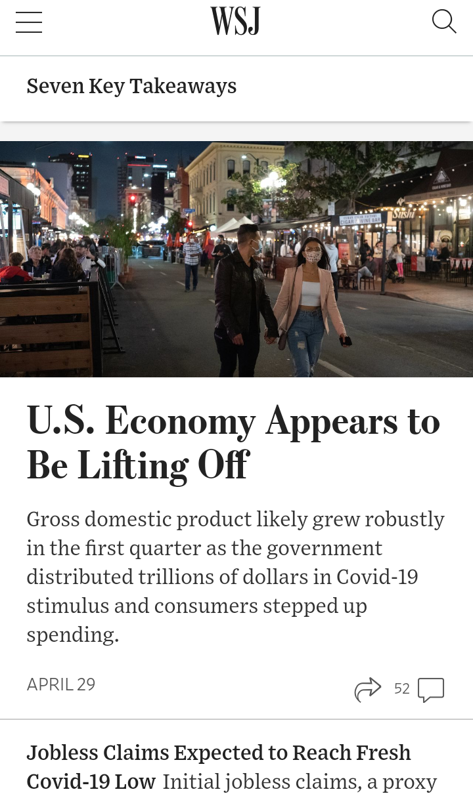

Fitt's Law
Progressive Insurance
www. progressive.com Progressive makes use of Fitt's Law both to make the most important buttons easy to access and to establish hierarchy based on their intended user experience.
Rule of Thirds
Wall Street Journal
www. wsj.com The image used in the headline uses the rule of thirds (among other techniques) to give visual interest. These strategies are common in photos across the site.
Contrast
CohnReznick LLP
www. cohnreznick.comCohnReznick makes this visible portion of the page contrast in color with the portion of the page below the current view. Both the location and color contrast of the top section establish its importance.